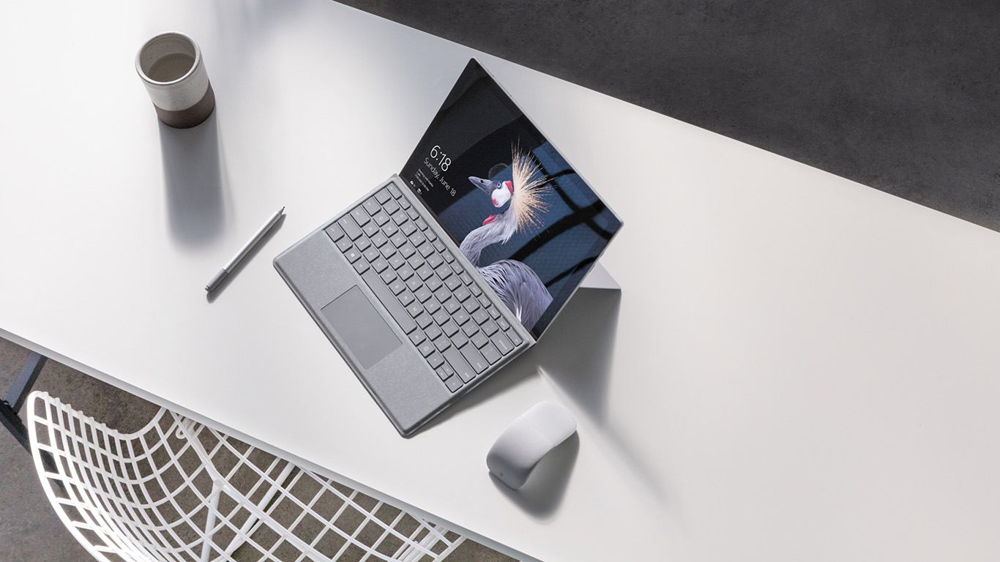

코인 시장 악재 줄줄이... 메이저 코인 입지는?
마이크로소프트가 이 달 말 서피스 프로 태블릿, 서피스 랩탑, 서피스 스튜디오를 업그레이드해 신제품으로 내놓을 것이라는 보도가 나왔다. 특히 2022년은 서피스 제품군이
출시된 지 10년째 되는 해다. 서피스는 2012년 6월에 발표돼 같은 해 10월 26일에 출시됐다. 올해 마이크로소프트 서피스 행사는 10월 12일로 정해졌는데, 서두를
경우 10년 전 서피스 1세대가 출시된 날짜와 비슷한 시기에 새로운 제품이 출고될 가능성이 있다.
그동안 서피스 태블릿은 총 10회 출시됐고 전체 제품군에는 도합 35종이 있다. 올해에는 서피스 프로 9, 서피스 랩탑 5, 서피스 스튜디오 3가 각각 출시될 것으로
예상된다.
가장 주목을 끄는 것은 서피스 스튜디오 3다. 윈도우 센트럴(Windows Central)은 FCC가 유출한 서피스 스튜디오 3 사진에 주목했다. 서피스 2와 놀랄 만큼
유사하다. 내부 사양은 확실하지 않지만, 윈도우 센트럴은 최신 제품이 아닌 11세대 인텔 코어 칩 탑재를 예상했다. 지금까지를 되돌아보면 CPU는 데스크톱이 아니라
모바일용일 가능성이 크다. 윈도우 센트럴 소속의 잭 보우든은 이 제품이 또 다른 제품인 서피스 랩탑 스튜디오와 유사한 사양인 서피스 스튜디오 2+가 될 수도 있다고
추측했다.

그럼에도 서피스 스튜디오 2는 사양보다는 경험에 주력한 장치였다. 이만큼 큰 모니터는 찾기 어렵고 터치로 입력되는 디스플레이는 더더욱 보기 어렵다. 마이크로소프트는 서피스
스튜디오를 윈도우 콘텐츠 창작자를 위한 도구이자 다른 기기를 뒷받침하는 안전 장치로 정의했다. 마이크로소프트가 서피스 스튜디오를 주류로 끌어올릴 구체적인 전략을 마련한 게
아니라면, 계속 일상 생활이 아니라 넷플릭스 드라마에나 나올 독특한 기기로 남을 것이다.
반면, 서피스 랩탑 5는 합리적인 가격으로 일반 사용자가 구입하기 훨씬 쉬운 기기다. 윈퓨처(WinFuture.de)는 신제품 서피스 랩탑 13인치, 15인치 버전의 전체
사양을 입수했다고 밝혔는데, 전작과 놀랄 만큼 유사하다. 각각 12세대 앨더 레이크 프로세서, 즉 코어 i5-1235U와 i7-1255U를, 기업을 대상으로 하는 서피스
랩탑 포 비즈니스 모델은 클럭 속도가 더 높은 코어 i5-1245U, i7-1265U를 탑재했다고 한다. 윈퓨처는 서피스 프로 9 역시 내부 CPU 사양이 같다고 보도했다.
그러나 서피스 프로 9와 서피스 랩탑 5는 초기에 유출된 사양과 조금 달라질 가능성이 있다. 우선 서피스 랩탑 5에는 AMD와 공동 개발한 라이젠 프로세서가 들어가지
않는다. 두 번째 마이크로소프트는 퀄컴 버전 서피스 프로 X를 서피스 프로 제품군에 끼워 넣기로 결정했다. Arm 윈도우 버전은 일반 서피스 프로 태블릿으로 브랜드화될
것으로 보인다. Arm 버전은 X86 버전보다 배터리 사용 시간이 길지만 성능이 조금 낮다. 마이크로소프트는 서피스 프로 X 태블릿을 통합 WWAN 모뎀 칩의 상시 연결성
도구로 정의했다.
유출되지 않은 다른 신제품이 있을 가능성도 있다. 10주년 기념 행사가 특별하게 치러지지 않는다고 해도 서피스 스튜디오 디스플레이라는 제품은 충분히 독특하다.
PCWorld의 12세대 인텔 모바일 코어 칩 리뷰를 참고하면 마이크로소프트가 왜 라이젠 변종을 별도로 개발하지 않았는지를 짐작할 수 있다. AMD 라이젠 5000
시리즈보다 월등하지는 않아도 코어 수가 더 많고 성능은 비슷했기 때문이다.
유출된 기기 외에 다른 놀라운 소식이 있을지 10월에 있을 서피스 행사를 주목해 보자.

Federal Reserve issues FOMC statement
연방준비제도이사회 FOMC 성명
최근에 추가된 팔로워
구독자
최근에 의견 업로드 한 사용자
최근 업로드